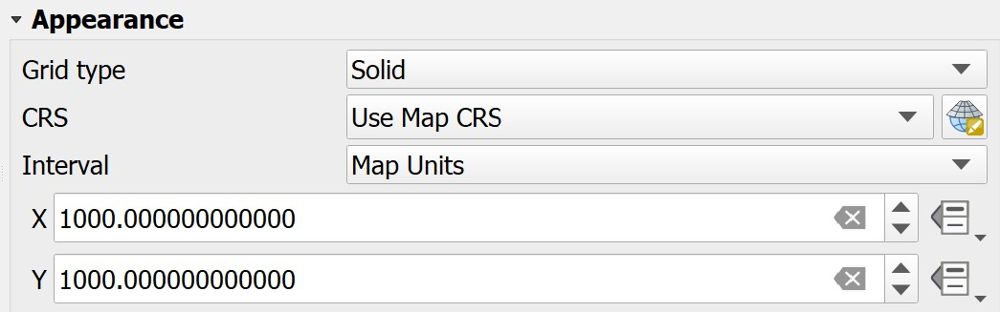

5 Beyond Mapping: Vector-based GIS Analysis for Urban Applications
The true power of a GIS of is its geoprocessing and analysis capability. Geoprocessing is a GIS operation used to manipulate GIS data. A typical geoprocessing operation takes an input dataset, performs an operation on that dataset, and returns the result of the operation as an output dataset. Common geoprocessing operations include geographic feature overlay, feature selection and analysis, topology processing, raster processing, and data conversion.
GIS analysis, on the other hand, is the process of examining the locations, attributes, and relationships of features in spatial data through overlay and other analytical techniques in order to address a question or gain useful geospatial knowledge. GIS analysis extracts or creates new information from spatial data.
In this hands-on exercise, you will learn how to combine geoprocessing and GIS analysis functions of QGIS to meet urban application needs.
5.1 Learning Outcome
By the end of this session, you will be able to:
extract geospatial data by using appropriate geoprocessing functions of QGIS,
create a GeoPackage database and save the extracted geospatial data into GeoPackage data table,
transform the referencing system of the geospatial data into from geographic coordinate system (i.e wgs84) to projected coordinate system (i.e svy21). integration using appropriate overlay and statistical analysis functions of QGIS,
derive new field from geospatial properties by using QGIS attribute table tools, and
prepare statistical graphic by using Data Plotly plugin of QGIS.
5.2 Getting Started
5.2.1 The Task
Every fives years, Urban Redevelopment Authority of Singapore will publish the new Land-Use Master Plan (MP). It is the statutory land use plan which guides Singapore’s development in the medium term over the next 10 to 15 years. The latest version was published in 2019 and the digital version is available at data.gov.sg.
In this hands-on exercise we are interested to understand the distribution of land areas by land-use allocation at the planning subzone level. The target planning area is Punggol area which comprises of seven subzones.
Two data sets will be used in this exericse, they are:
5.2.2 Creating the project folder
Create a new project folder called
Hands-on_Ex04or any name of your choice.Create a new sub-folder called
data.govor any name of your choice.
5.2.3 Downloading the data sets
DIY: Perform the following steps by using the steps you had learned from the previous hands-on exercise:
download both data sets,
place them in the newly created
data.govsub-folder, andunzip both data sets.
5.2.4 Start a new QGIS project
DIY: Using the steps you had learned from the previous hands-on exercise:
Launch QGIS.
Start a new QGIS project.
Save the project in
Hands-on_Ex04folder. Name the projectHands-on_Ex04or any other name of your choice.
5.3 Working with QGIS geoprocessing
5.3.1 Geospatial data wrangling with QGIS
Now, we are going to extract planning sub-zones belong to Punggol planning area from URA_MP19_SUBZONE_NO_SEA_PL layer.
- From the Layer pane, right click on
URA_MP19_SUBZONE_NO_SEA_PL - Select Open Attribute Table from the context menu.
The attribute table of URA_MP19_SUBZONE_NO_SEA_PL appears.
- From the menu bar of attribute table of
URA_MP19_SUBZONE_NO_SEA_PL, click on Select Features using an Expression icon
icon
Select by Expression dialog window appears.

- Click on the black triangle in front of Fields and Values.
A list of field names appears.
- Double-click on
PLN_AREA_N(i.e. Planning Area Name)
The Expression pane should look similar to the screenshot below.
- At the bottom of Expression pane, click on icon.
The Expression pane should look similar to the screenshot below.
- From the right of Select by Expression dialog window, click on All Unique button.
Notice that a complete list of unique value in the PLN_AREA_N appears.
- Scroll down the list until you see
Punggol. Double click on the wordPunggol.
The Expression pane should look similar to the screenshot below.
- Click on button located at the right hand corner of the dialog window.
Notice that the top bar of the attribute table window indicates that 7 records have been selected.

- From the Select by Expression dialog window, click on Close button located at the lower right corner.
To confirm that the records have been selected correctly,
- From the menu bar the the attribute table, click on
Notice that the selected records will be populated as shown below.
You can close the attribute table now.
- Click on the cross icon located at the upper right corner of the attribute table.
5.3.2 Saving the selected features into GeoPackage database
Now we are going to save the selected features into a new data layer in a GeoPackage database.
From the Layers panel, right-click on
URA_MP19_SUBZONE_NO_SEA_PL.Select Export -> Save Selected Features as.. from the context menu.
Save Vector Layer as.. dialog window appears.

For Format, select
GeoPackagefrom the drop-down list.For File Name, click on the button located at the back.
Save Layer as dialog window appears

Create a sub-folder in the
Hands-on_Ex04folder. Called the newly created sub-folderGeoPackage.Double-click on
GeoPackagesub-folder to navigate into the sub-folder.For File name, type
Punggol.Click on Save button.
Now, you will be back to Save Vector Layer as.. dialog window.
- For Layer name, type
MP19 Subzone.
DIY: For CRS, using the steps you have learned, change to
svy21projection coordinate system.
The complete interface should look similar to the screenshot below.
Check to make sure that the check-box in front of Save on selected features is checked.
When you are ready, click on Ok button to run the function.
Notice that a new GIS layer called Punggol --- MP19 Subzone has been add on Layers pane and display on map view as shaded polygons.
By referring to Hands-on_Ex04 folder in Browser panel, you will see that a new GeoPackage called Punggol.gpkg has been created with a data table called MP19 Subzone.

DIY: Using the steps you had learned from previous hands-on, examine the properties of
MP19 Subzonelayer.
Your screen should look similar to the screenshot below.
Notice that the layer is in svy21 Projected Coordinate System and not in the original wgs84 Geographic Coordinate System.
5.4 Geoprocessing with QGIS
5.4.1 Extracting land use features within Punggol planning area
In this section, you will learn how to use the clip operation of geoprocessing function to extract land use features fall within Punggol planning area.
- From the menu bar, select Vector -> Geoprocessing Tools -> Clip.
Clip dialog window appears.
For Input layer, select
G_MP19_LAND_USE_PLfrom the drop-down list.For Overlay layer, select
Punggol --- MP19 Subzonefrom the drop-down list.
Clip dialog window should look similar to the screenshot below.

- When you are ready to run the process, click on Run button.
Op! It seems that the process failed to complete due to invalid geometry issue.

Less worry, this is very common in geoprocessing operations because of dirty or untidy data such as slivers. The issue can be addressed by using the Advanced options tool of QGIS’s geoprocessing operations.
At Clip dialog window, click on Parameters tab.

Click on Advanced options button behind Input layer.
Clip dialog window change as shown below.
- For Invalid feature filtering, select Do not Filter (Better Performance) from the drop-down list.
DIY: Repeat the same steps for Overlay layer too.
- When you are ready, click on Run button one more time.
Be patient, there are a lot of polygon features to be extracted. If the process is completed without any error, the Log will look similar to below.
- Click on Close button to close the dialog window.
When you refer to Layers panel, a new data layer called Clipped is added. Notice that there is a small marker at the end of the layer name. It indicates that this layer is a virtual layer. In geoprocessing, it is always a good practice to keep the output layer a virtual layer first. After checking the correctness of the output layer, then only we will go ahead and save the layer into GeoPackage database.
DIY: Using the steps you had learned, save the
Clippedvirtual layer into GeoPackage, call the data layerMP19 Land Use.
DIY: Using the steps you had learned, remove
Clippedvirtual layer,URA_MP19_SUBZONE_NO_SEA_PL, andG_MP19_LAND_USE_PLlayers from the Layers panel.
You screen should look similar to the screenshot below.

DIY: Using the steps you had learned in previous hands-on, symbolise the land-use by land-use classes.
5.5 Data visualisation with Data Plotly plugin
5.5.1 Installing Data Plotly plugin
In this section, you will learn how to visualise the distribution of land-use class by area graphically by using Data Plotly plugin.
- At the menu bar, click on Plugins -> Manage and Install plugins.
Plugins dialog window appears.
- Search for Data Plotly.
- Click on Install Plugin button to install it.
Notice that a new icon will be added on the menu bar. Feel free to move it around and place it on the icon bar.
5.5.2 Deriving new field by using QGIS geometry
In order to display the distribution of land-use class by area, we need to calculate and store the area of each polygon features in the attribute table.
From the Layers panel, right-click on
Punggol --- MP19 LAND USE.Select Open Attribute Table from the context menu.
The attribute table of Punggol --- MP19 LAND USE layer appears.
Click on Open Calculate Field
 icon.
icon.Keep the box in front of Create a new field checked.
For Output field name, type
AREA.For Output field type, select Decimal number from the drop-down list.
At the Expression pane, click on the black triangle in front of Geometry.
Double click on $area. (Notice that there are two area fields, one is $area and the other is area).
Notice that the Expression panel is complete with \$area.
- Click on Ok button.
When the process is completed, a new field called AREA will be added in the last column of the attribute table as shown below.

- Close the attribute table.
Next, we will save the newly derived field.
At the Layers panel, right-click on
Punggol --- MP19 LAND USElayer.From the context menu, select Toggle Editing.
Toggle Editing dialog window appears.
- Click on Save button.
5.5.3 Plotting a frequency bar chart using Data Plotly plugin
Now, we are ready to create the statistical plot by using Data Plotly plugin.
- From the icon bar, click on Data Plotly icon.
Data Plotly dialog window appears.
For Plot type, select
Bar Plotfrom the drop-down list.For Layer, select
Punggol -- MP19 LAND USEfrom the drop-down list.For X field, select
LU_DESCfrom the drop-down list.For Y field, select
AREAfrom the drop-down list.
- When you are ready, click on Create Plot button.
A bar chart look similar to the screenshot below appears.
Well done! You have create a bar chart showing the distribution of land areas by land-use class within Punggol planning area.
5.6 Working with QGIS Print Layout
In this section, you will learn how to use QGIS Print Layout platform to create a land use map for printing or publishing purposes.
5.6.1 Preparing the print windows
Before we make a map using Print Layout, it is important for us to ensure that an appropriate coordinate referencing system is used. For the purpose of this hands-on exercise, let us use SVY21 as the coordinate referencing system.
- Ensure that EPSG: 3414 is indicated at the lower right corner on QGIS’s Window.
- Next, reshape QGIS Window until the white spaces in the GIS layer as minimum as possibe.
5.6.2 Starts a new QGIS print layout
- From the menu bar, select Project -> New Print Layout.
Create Print Layout dialog window appears.
Provide the layout an appropriate title such as Punggol Land Use.
Click on OK button when it is ready.
A new Print Layout dialog window appears.
- From the menu bar, click on on Zoom full button to display the full extent of Print Layout window.
5.6.3 Adding a map layer
Next, we will add the Land Use map layer onto the layout.
- From menu bar, select Add Item -> Add Map.
- Once the Add Map mode is active, hold the left mouse button and drag a rectangle where you want to insert the map like shown below.
- Release your left finger from the left mouse button.
Your screen should look similar to the screenshot below.
Notice that a new item called Map 1 has been added on the items panel.
5.6.4 Changing the main properties
Let us adjust the map scale.
- From the Item Properties panel, look for Main Properties then enter
30000as Scale value. (Note: Use other rounding values deem appropriate for your layout)
In order to prevent the view on the layout changes when we turn on/off some layers or change their styles, it is important for us to lock the layers and styles.
- Scroll the Main Properties panel down until Layers appears.
- Click on the check box in front of Lock layers and Lock styles for layers.
5.6.5 Adding grid reference
Next, we will add grid reference for the map.
From the Items Properties panel, scroll down until Grids sub-panel appears.
Click on
A new grid frame called Grid 1 is added as shown below.
Next ,we are going to add a 1000m by 1000m grid on the layout.
Click on Modify Grid button.
Scroll down until Appearance sub-panel appears.
For X, enter 1000.
For Y, enter 1000.

Next, we will change the line colour to gray.
- Click on the drop-down list behind Line style.
The colour panel appears.
- Choose one of the light gray colour from the panel.
Notice that a light gray grid frame is added on the layout.
Next, we are going to turn on the coordinates.
Scroll down the Map Grid Properties panel until Draw Coordinates sub-panel appears.
Click on the check-box in front of Draw Coordinates.
Your screen should look similar to the screenshot below.
By default the grid reference appears on the four axis of the map layout. We are going to turn off the grid reference on the right and bottom of the layout.
- From the Right sub-panel, click on the drop-down list and select Disable.
Notice that the right grid reference disappeared.
DIY: Repeat the step you learned to turn off the bottom grid reference.
The map layout should look similar to the screenshot below.

5.6.6 Adding map legend
Now, we are going to add map legend onto the layout.
- From the menu bar, select Add Item -> Add Legend.
- Press on the left mouse button, drag a window on the right hand side of the map layout as shown below.
- Release the left mouse button.
The map legend will be added onto the layout.
Since this layout will focus on Land Use Map alone, we are going to remove other unrelated items from the legend.
- From Legend Items sub-panel, click on the check-box in front of Only show items inside linked map.
Notice that Punggol-MP19 Subzone disappeared from the legend.
5.6.7 Adding statistical graphic
One of the nice feature of QGIS layout is it allows statistical graphic to be added onto the layout.
- From menu bar, select Add Item -> Add Plot Item.
- Press on left mouse button and drag a window at the lower right corner of the layout as shown below.
Release the left mouse button.
From the Items panel, click on scatter, then click on Setup Selected Plot button.
- For Plot type, click on the drop-down list and select Bar Plot.
For X field, select LU_DESC from the drop-down list.
For Y field, select AREA from the drop-down list.
- At the Properties sub-panel, click on Update Plot button.

Notice that a bar chart showing distribution of Land use class by area has been added onto the layout.

5.6.8 Adding scale bar
Now we are going to add scale bar onto the layout.
- From the menu bar, select Add Item -> Add Scale Bar.
- Press on the left mouse button, drag a window at the lower left corner of the layout as shown below.
- Release the left mouse button.
Notice that a scale bar has been added onto the lower left corner of the layout.
Let us change the scale label to km.
- From Unit sub-panel, click on the drop-down list behind Scalebar units and select Kilometers from the drop-down list.
Next, we are going to increase the scale bar segment from 2 to 4.
- From Segment sub-panel, at right, type 4.
Notice that the scale bar at the lower left corner of the layout change to four segments.
5.6.9 Adding north arrow
Next, we will add a north arrow on top of the scale bar.
- From the menu bar, select Add Item -> Add North Arrow.
- Press on the left mouse button and drag a small window onto of the scale bar.
- Release the left mouse button.
Notice that a north arrow has been added onto the layout.
5.6.10 Adding layout title and caption
Next, we are going to add layout title.
- From the menu bar, select Add Item -> Add Label.
- Press on the left mouse button and drag a small but long window at the top of the map box.
- At the Main Properties, type the following text.
Next, we are going change to a bigger font size.
- From the appearance sub-panel, click on the drop-down list behind Font.
The Font size window appears.
- Change the font size to 24.
Next, change the title horizontal alignment to centre and vertical alignment to middle.
For Horizontal alignment, click on the radio button in front of Center.
For Vertical alignment, click on the radio button in front of Middle.
The print layout should look similar to the screenshot below.
DIY: Using the steps you learned, add a caption below the scale bar. The caption should mention the data source such as “Source: URA MP2019, digital version was downloaded from data.gov.sg”
The final layout should look similar to the screenshot below.
- Lastly, remember to click on the Save button to save the layout.
5.6.11 Exporting print layout
In QGIS, the composed map layout can be exported into three formats, namely: Image, SVG and PDF.
- To export, click on File from the menu bar and select on of the format list below.
5.7 Distance Analysis with Vector-based GIS
Distance analysis is fundamental to most GIS applications. In its simplest form, distance is a measure of how far away one thing is from another. A straight line is the shortest possible measure of the distance between two locations. In this section, you will learn how to apply distance analysis function of QGIS to determine the accessibility to pre-school from residential buildings within Punggol Planning Area.
5.7.1 The data
For the purpose of this study, beside Punggol Planning Subzone layer, the following data will be used:
- Pre-Schools Location from data.gov.sg.
- Buildings layer of osm from geofabrik.
5.7.2 Preparing pre-school location layer
DIY: Perform the following steps by using the steps you had learned from the previous hands-on exercise:
- download Pre-school Locations from data.gov.sg,
- place them in the newly created data.gov sub-folder, and
- unzip the data set and import the kml version into QGIS.
Notice that the pre-school location layer shows all prep-school locations in Singapore. For the purpose of this study, we are going to extract pre-schools located within Punggol Planning Area.
Instead of using Clip operation of QGIS to extract pre-schools located with Punggol Planning Area, in this section, you will learn how to work with Spatial Query operators of QGIS.
- From the menu bar, select Vector -> Research Tools -> Select by Location.
The Select by Location dialog window appears.
- For Select features from, select
PRESCOOLS_LOCATIONfrom the drop-down list. - Click on the check-box in front of Intersect. Students are encouraged to explore other operators.
- For By comparing to the features from, select
MP19 Subzonefrom the drop-down list.
- When you are ready, click on Run button.
When the spatial query process completed, QGIS indicates that 71 features have been selected and are highlighted on the map view similar to the screenshot below.

- Click on the Close button to close the dialog window.
DIY: Using the steps you had learned in previous section,
save the selected pre-school location features into
Punggol Geopackage. Name the data layer asPre-schools. Be warn: Check the Coordinates Referencing System of the input GIS data, if necessary an appropriate Projected Coordinates System.remove
PRESCHOOL_LOCATIONSfrom Layers Panel
Next, let us view the GIS layers in full extend.
- From the icon bar, click on Zoom Full
 icon.
icon.
Your screen should look similar to the screenshot below.

5.7.3 Preparing residential building layer
Next, we will extract the residential building layer from the building data set provided by osm.
Using the steps you had learned,
down, unzip and save the osm shapefiles into a folder called
shapefilein the project folder.import
gis_osm_buildings_a_free_1shapefile into QGIS.
Your screen should look similar to the screenshot below.
The downloaded gis_osm_buildings_a_free_1 layer covers Singapore, East Malaysia, West Malaysia (both Sabah and Sarawak states) and Brunei Darussalam. However, we are only interested on residential buildings located within Punggol Planning Area.
DIY:
Using Spatial Query function of QGIS, select buildings fall within Punggol Planning Area,
Export the selected buildings features into Punggol Geopackage and call it
Buildings. Be warn: Check the Coordinates Referencing System of the input GIS data, if necessary an appropriate Projected Coordinates System.Remember to remove
gis_osm_buildings_a_free_1layer from QGIS Layers panel.
Next, let us view the GIS layers in full extend.
- From the icon bar, click on Zoom Full icon.
Your screen should look similar to the screenshot below.
Now, we are going to use the selection by attribute operator of QGIS to select buildings belong to residential type.
- From Layers panel, right-click on
Buildingslayer. - Select Open Attribute Table from the context menu.
The attribute table of Buildings layer appears.
- From the menu bar of the attribute table, click on Select features using an expression icon .
The Select by Expression dialog window appears.
Click on the black triangle in front of Fields and Values.
Double click on
type.Click on = button.
Click on All Unique button.
Scroll the slider until
residentialappears.Double-click on
residential.
The expression should look similar to the screenshot below.
When you are ready,
- Click on Select features button to run the operation.
If the process completed successfully, QGIS will indicate the number of features selected at the top of the attribute table and the selected features’ records will be highlighted as shown in the screenshot below.
Close the Selection by Expression dialog windows.
Close the attribute table.
Before we continue, it is important to save the selected residential features into a new data layer in Punggol Geopackage.
DIY: Using the steps you had learned, export the selected residential features into Punggol Geopackage and call it
Residential. Be warn: Check the Coordinates Referencing System of the input GIS data, if necessary an appropriate Projected Coordinates System.
- Switch off
Buildingslayer because they are no longer needed.
Your screen should look similar to the screenshot below.
5.7.4 Deriving centroids of residentail polygon features
In order to calculate the distance between the residential polygon features to the pre-school point features, we need to derive the centroid of the residential polygon features first.
- From the menu bar, select Vector -> Geomtry Tools -> Centroids.
The Centroids dialog window appears.
- For Input layer, select Residential from the drop-down list.
- When you are ready to run the operation, click on Run button.
Before you can blink your eyes the operation has done and a new layer called has been added onto Layers panel and display on View window as shown below.
- Close Centroids dialog window.
From the screenshot above, it seems that the residential building centroids were sucessfully derived. However, if we zoom in closer you will notice that there are three centroids were located outside of the footprint of the residential buildings. Obviously, the built in Centroids function of QGIS failed to derive the centroid properly when the shape of the polygon is an odd shape.
The good news is that there is a QGIS plugin called realcentroid which is able to address the limitation of Centroid function.
- From menu bar, select Plugins -> Manage and Install Plugins.
- Search for realcentroid then click on Install Plugin button.
- After the installation completed, click on Close button to close the dialog window.
Now we are ready to use realcentroid tool to derive the centroids of building polygon features.
- From menu bar, select Vector -> realcentroid -> RealCentroid.

The realcentroid dialog window appears.
- For Polygon layer, select Residential from the drop-down list.
- Fro Output point on surface layer, click on Browse button.
The Output shape file dialog window appears.
Navigate to shapefile folder. If you have yet to create one, then go ahead to create the shapefile folder.
Call the output shapefile
residential_centroid.
- Click on Save button.
The dialog window close.
From the realcentroid dialog window, click on check box in front of Add to map canvas. This will add the newly derive layer onto Layers panel and View display when the shapefile is ready.
Click on OK button.
After a few second, residential_centroid will be added on Layer panel and display on View window.
Notice that all the centroids are located within the residential footprint as shown below.
DIY: Using the steps you had learned from previous section, save residentail_centroid shapefile into GeoPackage. Then remove centroid and residential_centroid shapefile from QGIS Layers panel.
5.7.5 Computing distance matrix
Now we are ready to compute the distances between residential centroids and pre-school point features.
- From the menu bar, select Vector -> Analysis Tools -> Distance Matrix.

The Distance Matrix dialog window appears.
For Input point layer, select
Punggol - residential centroidfrom the drop-down list.For Target point layer, select
Pre-schoolfrom the drop-down list.
- For Output matrix type, select Summary distance matrix (mean, std. dev., min, max) from the drop-down list.
Note: You are encouraged to explore all the three options so that you can understand when to change to alternative output.
- When you are ready to run the operation, click on Run button.
After a few second, the process log appears on Distance Matrix indicates that the operation has completed successfully.
At the same time a temporarily layer called Distance matrix will be added on Layers panel and displayed on View window.
- At the Distance Matrix dialog window, click on Close button to close the dialog window.
Let us examine the output Distance matrix layer.
- From Layers panel, right-click on
Distance matixand select Open Attribute Table from the context menu.
The attribute table of Distance matrix appears.
The attribute table consists of five columns, namely:
InputID: the fid of the input layer (i.e. residential centroid)
MEAN: mean distance from a residential centroid to the 71 pre-schools.
STDEV: standard deviation of distances from a residential centroid to the 71 pre-schools.
MIN: minimum of distances from a residential centroid to the 71 pre-schools.
MAX: maximum of distances from a residential centroid to the 71 pre-schools.
DIY: Using the steps you had learned, save the temporarily
Distance matrixinto GeoPackage and call itDismat Residential. Then, removeDistance matrixfrom Layers panel.
5.7.6 Symbolosing distance values
Lastly, we are going to symbolise Dismat Residential layer by using appropriate statistical mapping techniques.
DIY: Using the quantitative mapping you had learned in previous hands-on exercise, symbolising
Dismat Residentiallayer by using values from MIN field.
Your map should look similar to the screenshot below.
Interesting to note that despite there are four pre-schools located at the Northshore sub-zone however, there are several residential blocks have relatively poor accessibility to pre-schools. (Fruit for Thought!)